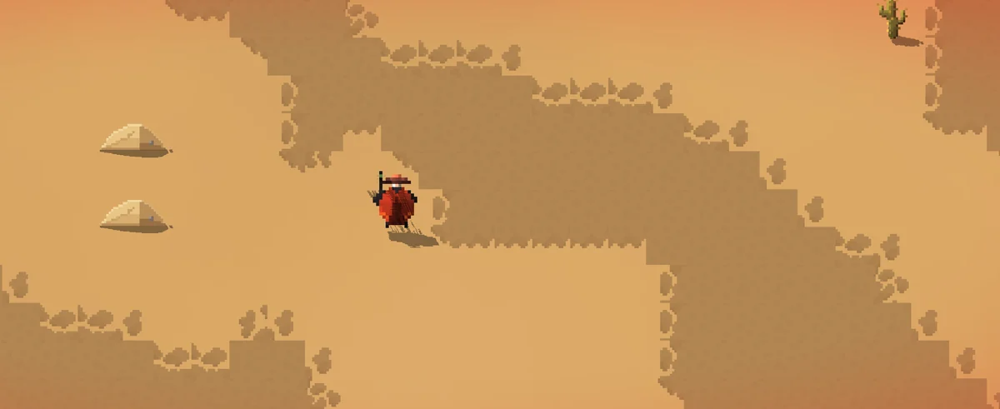

Désertique
Le sable garde vos traces
- Chaleur et soif : deux cadrans à surveiller, le soleil fait monter l'un et descendre l'autre.
- Vos pas s'impriment dans le sable derrière vous.
- Vers des sables, momies, scarabées colossaux et squelettes géants.